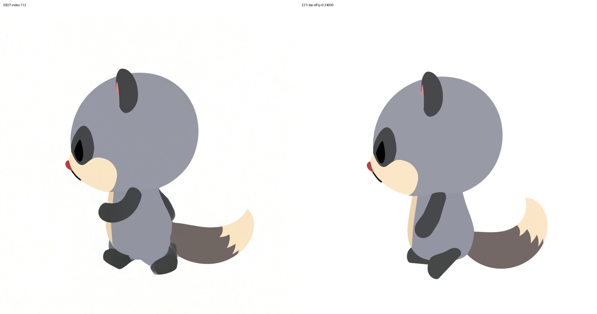
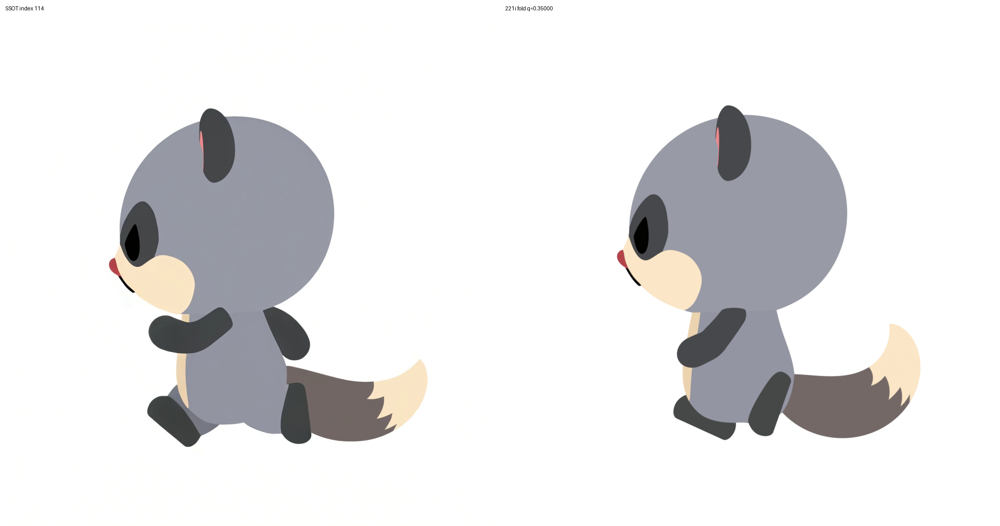
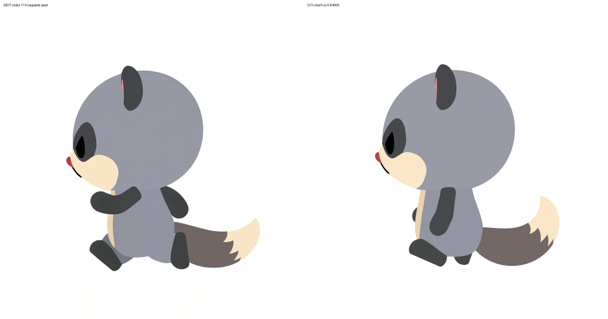
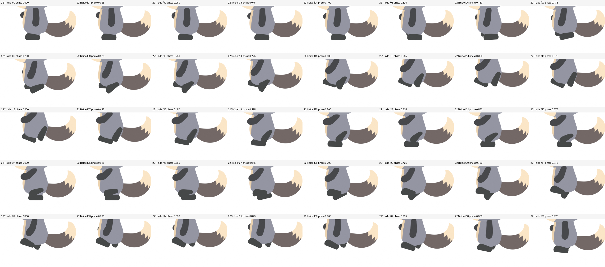
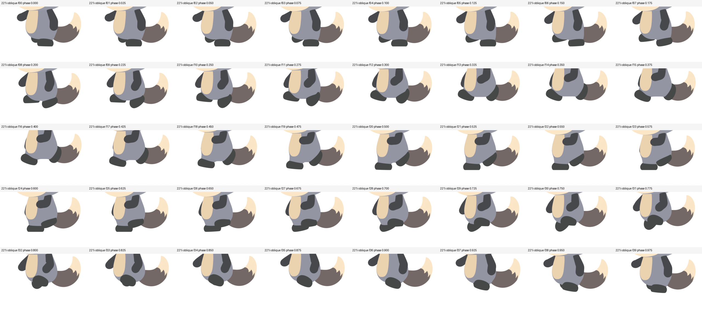

2026-10-01。「SSOT は地面を蹴って走っている印象だが、今の成果物は足を前に運んで踏みしめている印象」というご指摘への対応です。処理はすべて Windows 機で行っています。
違いは足の動く距離ではなく、足の向きと体の下に収まっているかでした（設計担当の Fable と GPT-6 の 2 席が、別々に検討して同じ結論）。
| 221f（前の版） | 221i（今回） | |
|---|---|---|
| 蹴り出し | 足を平らなまま持ち上げる（3°） | つま先を床につけたまま約 46° 返して押す |
| 蹴った後の足 | 斜め（48°）、尻尾に一部めり込む | 体の後ろ端の下でほぼ垂直にたたむ（尻尾との 3D 重なり 0） |
| 前に出す足 | 平らなまま前へ運んでそのまま置く | かかと先・つま先上向きで体の下にぶら下がり、少し引き戻してから着地 |
| 足の位置 | 体の下 | 体の輪郭の内側（新しいチェックで保証） |
| 1 周期 | 0.70 秒 | 0.667 秒（SSOT と同じ） |
| 腕・頭・尻尾 | 同じ（腕振りは足が決まってから別に詰めます） | |
途中の 221g・221h では足を前後に大きく動かして近づけようとしましたが、脚が灰色のくさびのように伸びて「座っている」見た目になったため不採用にしました（お見せしていません）。
1/4 速度：
1/4 速度：
蹴り出し：

後ろ足をたたむ：

前足を出す：


